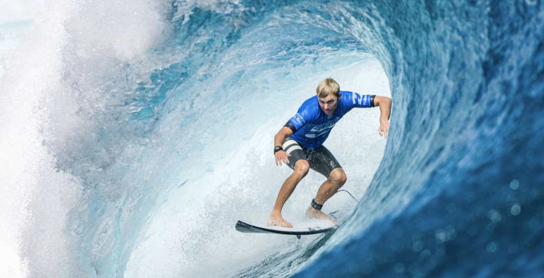
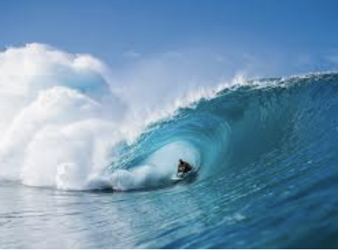

A history of surfing

Surfing is a surface water sport in which the wave rider, referred to as a surfer, rides on the forward
\or face of a moving wave, which usually carries the surfer towards the shore. Waves suitable for surfing
\are primarily found in the ocean, but can also be found in lakes or rivers in the form of a standing wave
\or tidal bore. However, surfers can also utilize artificial waves such as those from boat wakes and the
\waves created in artificial wave pools.

James
James
James
James